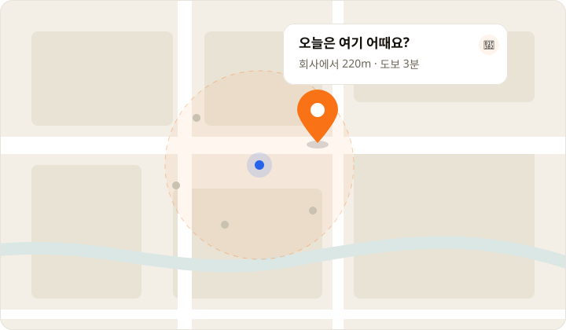

일하다 말고 메뉴 회의
집중해서 일하다가도 단톡방 알림에 손을 멈추게 됩니다.
메뉴 고르는 시간 아까우셨죠? 버튼 한 번이면 지금 딱 맞는 메뉴를 추천해드려요.
어떤 사무실은 이미
11시 30분에 정하고,
11시 31분에 나갑니다
같은 점심시간인데 누구는 30분을 회의하고, 누구는 바로 일어섭니다. 차이는 입맛이 아니라 정하는 방식이었습니다.
물음표만 올라오고 아무도 안 정해요. 일하다 말고 지도 앱을 뒤지고, 겨우 생긴 쉬는 시간은 메뉴 회의로 사라집니다. 그러다 12시가 되고, 결국 늘 가던 그 집으로 갑니다.
집중해서 일하다가도 단톡방 알림에 손을 멈추게 됩니다.
서로 배려하다 아무도 못 정하고, 쉬는 시간만 그대로 사라져요.
블로그·지도를 뒤져도 뭐가 진짜 괜찮은 집인지 알기 어렵습니다.
새로 생긴 가게가 궁금해도, 실패가 무서워 익숙한 곳을 고릅니다.
그리고 우리 모두, 사실은
가끔은 그냥, 누가 딱 정해줬으면 싶잖아요.
그 시간, 대부분 업무 시간과 쉬는 시간에서 빠져나갑니다
업무 중 메뉴 정하는 시간
쉬는 시간에 가게 찾는 시간
이제 정하는 시간
업무 흐름 끊지 않고 3초 만에 정하세요. 쉬는 시간은 쉬는 데 쓰고, 메뉴도 가게도 저희가 골라드릴게요.
버튼 한 번이면 회사 근처에서 갈 만한 가게를 뽑아드려요. 단톡방에 공유하면 그걸로 끝납니다.
OUR CONCEPT
고민을 줄여주는 앱이 아니라, 고민을 끝내주는 앱
메뉴를 더 많이 보여드리지 않습니다. 딱 하나만 정해서 보여드립니다. 선택지를 늘리는 게 아니라 하나로 좁히는 것, 그게 저희 컨셉입니다.
고민 없이 바로
입력도 필터도 없습니다. 버튼만 누르면 끝이라 업무 흐름이 끊기지 않아요.
회사 근처만
점심시간에 다녀올 수 있는 거리만 추천해요. 배달이 아니라 나가서 먹는 기준입니다.
공유로 끝
결과 링크를 단톡방에 넘기면 눈치 게임도 같이 끝납니다.
메뉴를 정하는 게 어려운 진짜 이유는 선택지가 많아서가 아니라, “지금 여기서 갈 수 있는 곳”이 어디인지 몰라서입니다. 그래서 저희는 위치를 기준으로 답을 좁힙니다.

점심시간은 한 시간뿐입니다. 아무리 좋은 집이어도 왕복 40분이면 후보가 될 수 없어요. 그래서 반경 안, 걸어서 다녀올 수 있는 거리만 후보로 둡니다. 추천받고 시간을 계산할 필요가 없습니다.
블로그 상위 노출은 대부분 광고입니다. 저희는 순위를 매기지 않고 지금 내 위치를 기준으로 실제 영업 중인 가게를 불러옵니다. 순위가 아니라 거리와 지금이라는 기준으로 좁힙니다.
목록을 열 개 보여주면 고민은 다시 시작됩니다. 그래서 좁힌 후보 중에서 딱 한 곳만 지도에 찍어드립니다. 화면에 남는 건 가게 하나, 거리 하나, 그리고 단톡방에 넘길 링크 하나입니다.
위치를 알면 고민할 거리 자체가 줄어듭니다.
그게 저희가 위치 기반을 고른 이유입니다.
위치 기반 서비스가 실제로 어떻게 동작하는지, 4단계로 보여드릴게요.
브라우저가 현재 위치를 알려줍니다. 주소를 입력할 필요도, 회원가입을 할 필요도 없습니다.
Geolocation API그 좌표를 기준으로 반경 700m 안의 음식점을 지도 서비스에 요청합니다. 점심시간에 다녀올 수 있는 거리만 봅니다.
카카오맵 장소 검색 API받아온 목록을 다 보여주지 않습니다. 그중 한 곳만 뽑아서 결정을 대신 내려드립니다. 고민할 거리를 남기지 않는 게 핵심입니다.
랜덤 선택 로직가게 위치에 마커를 찍고 이름·거리·상세 링크를 띄웁니다. 그 링크를 단톡방에 넘기면 점심 회의가 끝납니다.
지도 마커 · 링크 공유입력 한 번 없이, 여기까지 3초. 이게 저희가 만든 점심 정하는 방식입니다.
다음 업데이트에는 랜덤 요소의 재미를 살린 엔터테인먼트적 기능이 추가될 예정입니다.
사다리에 메뉴 후보나 메뉴를 선정할 사람을 넣어 오늘의 메뉴를 결정합니다.
주사위를 여러 번 굴려 높은 숫자를 가진 사람이 메뉴를 정합니다. 링크로 친구에게 승부를 걸어보세요.
근처 식당 정보를 가져와 최후의 후보 공 하나가 남을 때까지 핀볼을 진행합니다.
지금 이 링크를 통해 베타 서비스에 참여하면, 정식 출시 후 3개월 프리미엄 무료 이용권을 드립니다.
이 페이지의 베타 전용 링크를 통해 곧바로 서비스를 이용해 보세요.
이 링크로만 가능내 주변 맛집 찾기, 랜덤 메뉴 선정, 최적의 회식 장소 찾기 기능을 제한 없이 이용하세요.
모든 기능 이용사용 경험을 솔직하게 남겨주세요. 좋았던 점과 불편했던 점 모두 서비스 개선에 활용됩니다.
약 5분 소요후기 작성자를 대상으로 이벤트 혜택을 안내합니다. 자세한 선정 기준과 지급 방식은 운영 정책 확정 후 공지됩니다.
이벤트 혜택 안내좋았던 점과 불편했던 점 모두 서비스 개선에 활용됩니다.